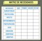

| Recurso (1) | Datos del recurso (1) | Recurso (2) | Datos del recurso (2) |
|---|---|---|---|
|
Autoría: Agustín Díaz. Licencia: CC-BY-SA. Procedencia: http://www.flickr.com/photos/yonmacklein/22105978/ |
Autoría: Pablo Sanz Almogera. Licencia: CC BY-NC-SA. Procedencia: http://www.flickr.com/photos/pablosanz/2839818050/ |
||
|
Autoría: Luis Pérez. Licencia: CC BY-NC-SA. Procedencia: http://www.flickr.com/photos/luipermom/2934628860/ |
Autoría: RonLD. Licencia: CC-BY. Procedencia: http://www.flickr.com/photos/rld/1204516152 |
||
|  |
Autoría: Olga Berrios. Licencia: CC BY. Procedencia: http://www.flickr.com/photos/ofernandezberrios/368893337/ |
Autoría: Speric. Licencia: CC BY-NC. Procedencia: http://www.flickr.com/photos/ericfarkas/248666729/ |
|